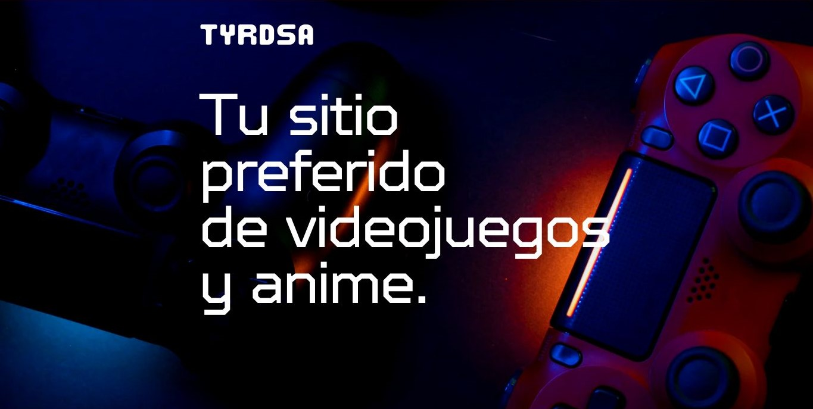

Descubre Noticias

El Regreso de Final Fantasy VII: Rebirth ya tiene fecha de lanzamiento
Prepárate para una nueva aventura en el mundo de Final Fantasy VII. Este épico regreso traerá sorpresas y novedades.
Leer más
Attack on Titan Final Season - Parte 4 ya tiene fecha y nuevo tráiler
¡La última temporada de Attack on Titan está por llegar! No te pierdas el tráiler y las nuevas fechas de lanzamiento.
Leer másQuiénes Somos
Bienvenidos a Tyrdsa, tu portal para explorar el maravilloso y apasionante mundo de los videojuegos y el anime. Nos dedicamos a ofrecer noticias, productos exclusivos con precios muy tentadores, y contenido para unir a las comunidades de videojuegos y anime.